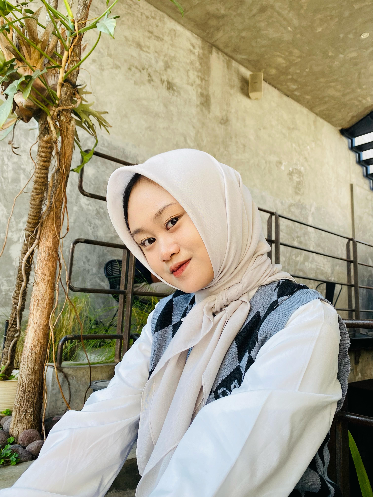
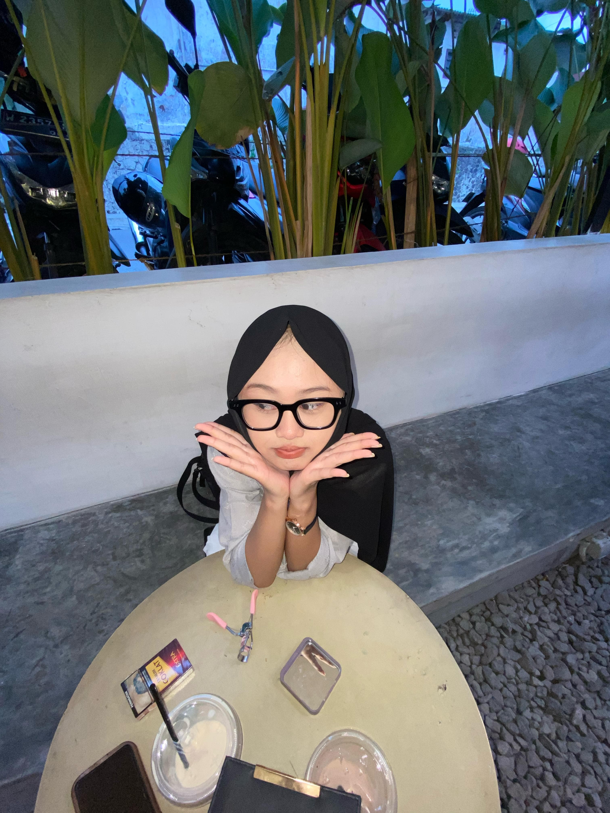
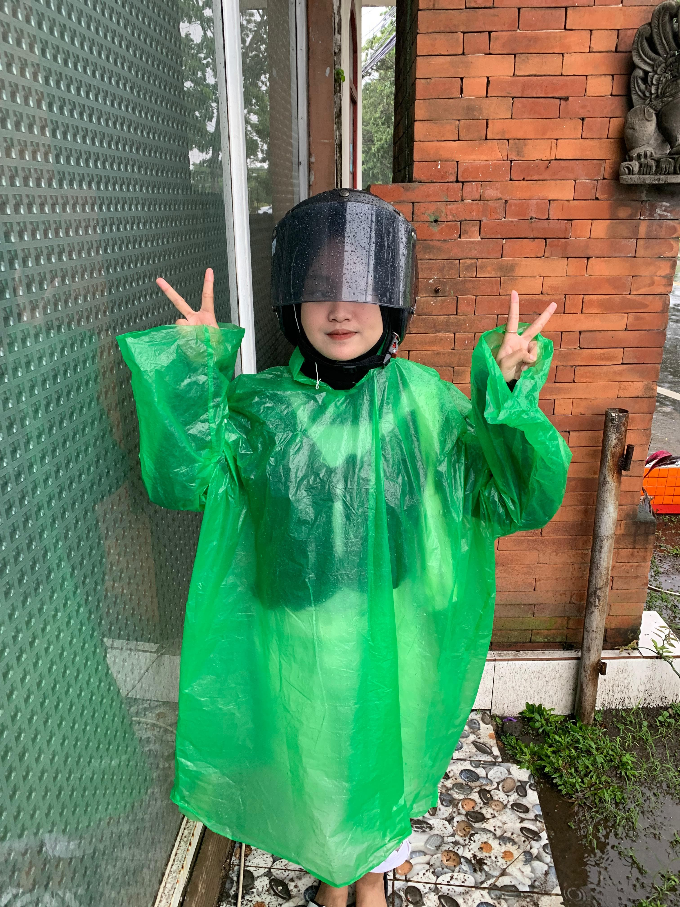

|  |  |  |
aku adalah seseorang yang memiliki selera warna yang cerah dan feminin, yaitu warna pink dan biru,warna ini mungkin mencerminkan kepribadian yang ceria, penuh kasih sayang, atau berani. Selain itu, aku memiliki preferensi rasa yang kuat, yaitu sangat suka pedas,hal ini menunjukkan aku adalah orang yang menyukai tantangan dan sensasi yang intens, tidak takut mencoba hal-hal baru, dan menikmati hidangan yang kaya akan rasa.